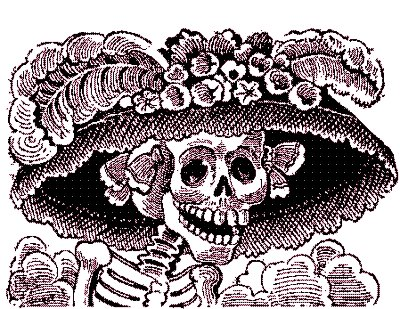
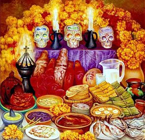
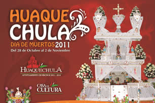
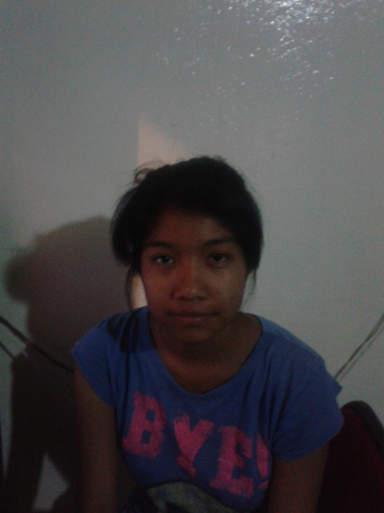

El dia de los difuntos es designado por la iglesia catolica romana para la conmemoracion de los difuntos fieles.
La celebracion se basa en la doctrina de que las almas de los fieles al tiempo de morir no han sido limpiadas de pecados veniales, o que no han hecho expiacion por transgraciones del pasado.
Asi sucede con los capaecinos de muchos paices catolicos creen que en el dia de los difuntos los muertos vuelven a las casas donde antes habian vivido y participan de la comida de los vivientes(The enciclopedia Britanica).
La representación de los altares de muertos ha cambiado a través de los siglos desde la introducción de la religión católica en el México prehispánico. Se han incluido elementos simbólicos que no pertenecen a las culturas mesoamericanas, como imágenes religiosas católicas.La estipulación de la festividad religiosa del Día de Todos los Santos se conjuga con el Día de Muertos. En tiempos de la Conquista de México se intentó convertir al catolicismo a los pobladores de Mesoamérica. La tradición "se resistió a morir" y poco a poco se le fueron incluyendo elementos de las culturas europeas.
Niveles del altar.
Los niveles en el altar de muertos representan la cosmovisión, regularmente representando el mundo material y el inmaterial o los cuatro elementos, en cada uno de ellos se colocan diferentes objetos simbólicos para la cultura, religión o la persona a la que se le dedica el altar.
Altares de dos niveles: son una representación de la división del cielo y la tierra representando los frutos de la tierra y las bondades de los cielos como la lluvia.
Altares de tres niveles: representan el cielo, la tierra y el inframundo. Debido a la introducción de ideologías de las religiones europeas, ha cambiado su significado a dos posibles, pudiendo representar la tierra, el purgatorio y el reino de los cielos, o bien, los elementos de la Santísima Trinidad según la tradición católica.
Altares de siete niveles: son el tipo de altar más convencional, representan los siete niveles que debe atravesar el alma para poder llegar al descanso o paz espiritual.2 Según la práctica otomí, los siete escalones representan los siete pecados capitales. Se asocia el número siete con el número de destinos que, según la cultura azteca, existían para los diferentes tipos de muerte.
Aromas En su forma más tradicional se incluyen diversos elementos aromáticos que simbolizan la purificación del alma, así como diversas especies de hierbas de olor, las cuales también representan los frutos de la tierra. Su origen simbólico se concentra en el aroma embelesante, capaz de guiar o atraer a los difuntos a su ofrenda.
Comida La comida, según la tradición, debe ser del agrado del fallecido. Debido a la dieta del mexicano promedio, es frecuente ver la cocina criolla nacional como mole, pozole, tacos, tamales etc., presente en muchos altares. Se deben incluir diferentes frutos de temporada como la calabaza, el tejocote y jícama, naranja, y por supuesto, alimentos hechos de maíz.
El pan de muerto es un tipo de pan dulce que se coloca como ofrenda hacia los muertos. Tiene un par de tiras sobre la corteza que representan un par de huesos. Este pan desciende del pan de maíz hecho por las civilizaciones del México antiguo.
Bebidas alcohólicas Algunos altares contienen bebidas alcohólicas como tequila, rompope y pulque servidos en recipientes de barro, utilizados para mantener el tradicionalismo. Puede incluirse cualquier otra bebida que le haya gustado al difunto.
Objetos personales En los altares se utilizan prendas de vestir del ya fallecido, objetos representativos del oficio al que se dedicaba o sus objetos preferidos. En el caso de los menores suele colocárseles juguetes y dulces.Y se puede poner también algunas de sus canciones favoritas ya sea en música o en el disco.
Adornos Infinidad de adornos alusivos a la muerte han surgido del arte popular mexicano y se han agregado al altar de muertos. Figuras con cuadros de entierros, velorios o cementerios, o representando escenas de la vida cotidiana con esqueletos como personajes realizados en figuras de alfeñique, cartonería, madera, barro o yeso, son típicos de la fecha, así mismo como hermosos arreglos frutales o florales.
También en muchos altares se incluyen cadenas elaboradas con papel crepé, de color morado y amarillo, un eslabón de cada color, alternados. El morado representa la muerte y el amarillo la vida, por lo que con este adorno queda representada la delgada línea existente entre la vida y la muerte.
Una de las fiestas más importantes es el Día de Muertos, fecha en que se dedican las famosas ofrendas a los seres queridos que han muerto durante ese año. En estos altares se colocan varios objetos representativos de la celebración y del difunto, como su comida favorita, la cual, según la creencia, el difunto vendrá a probar durante la noche. Lo más común es colocar mole, hojaldras (el pan típico de este feriado), dulces, fruta, chocolate y atole. También se suelen colocar reliquias u objetos personales del difunto, y una cruz con la imagen de algún santo.
Aunque no celebre este festejo respeto las creencias de quien las celebre, ya que yo he aprendido en la Biblia en Eclesiastes 9:5 que los muetos estan en un estado de inconciancia es decir no oyen, no hablan, ni piensan mas. Por lo tanto ellos no pueden volver. Ademas de ello el festejo tiene tintes de origen pagano y espititista.
En cuanto a la tradicion pienso que se ha mezclado con otras crencias de estilo americano.
